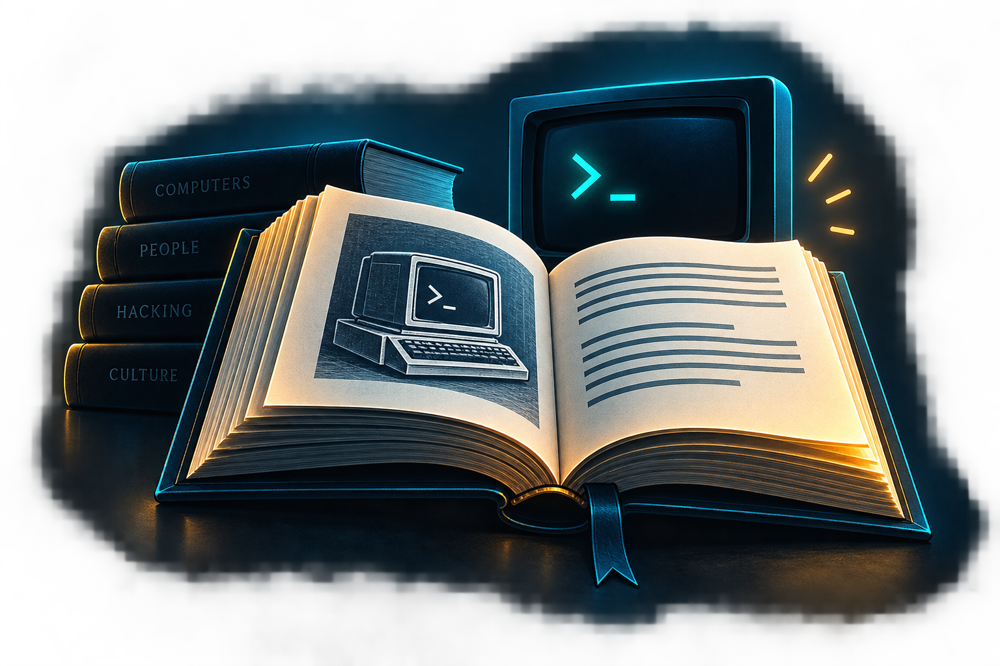
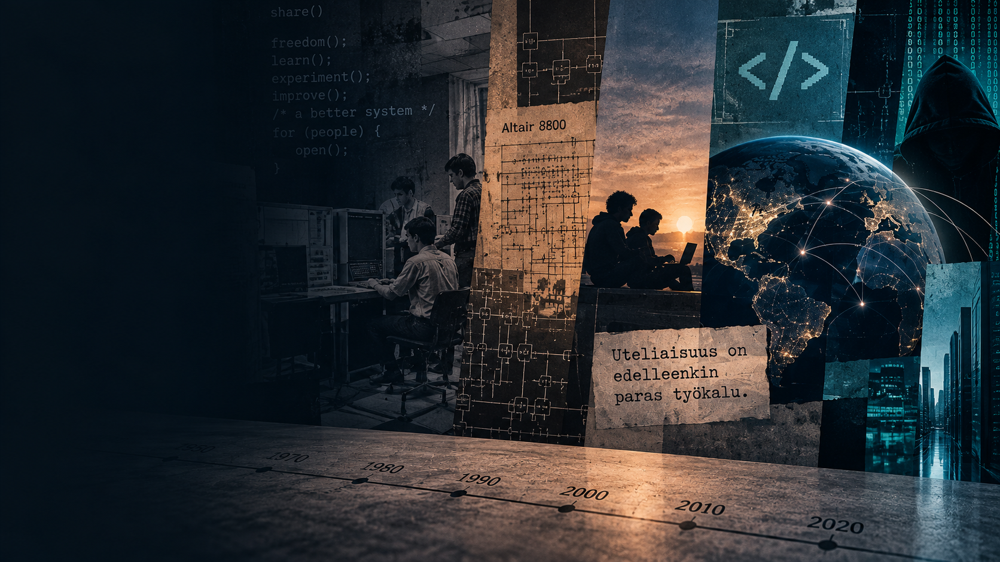
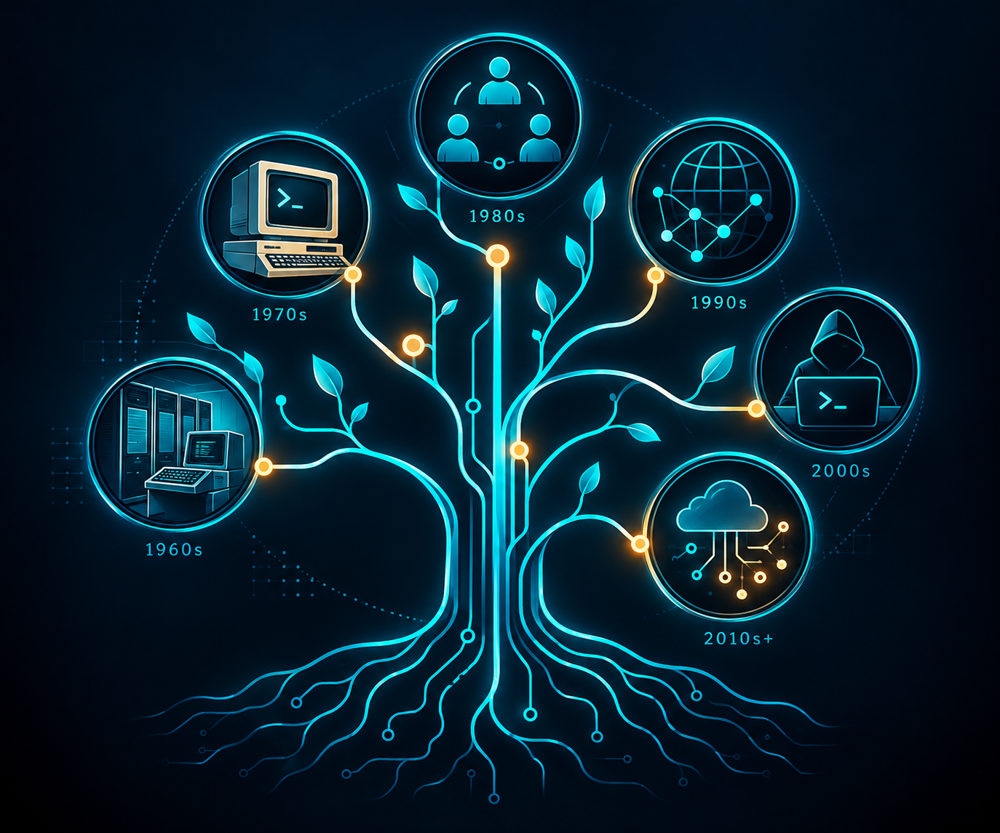
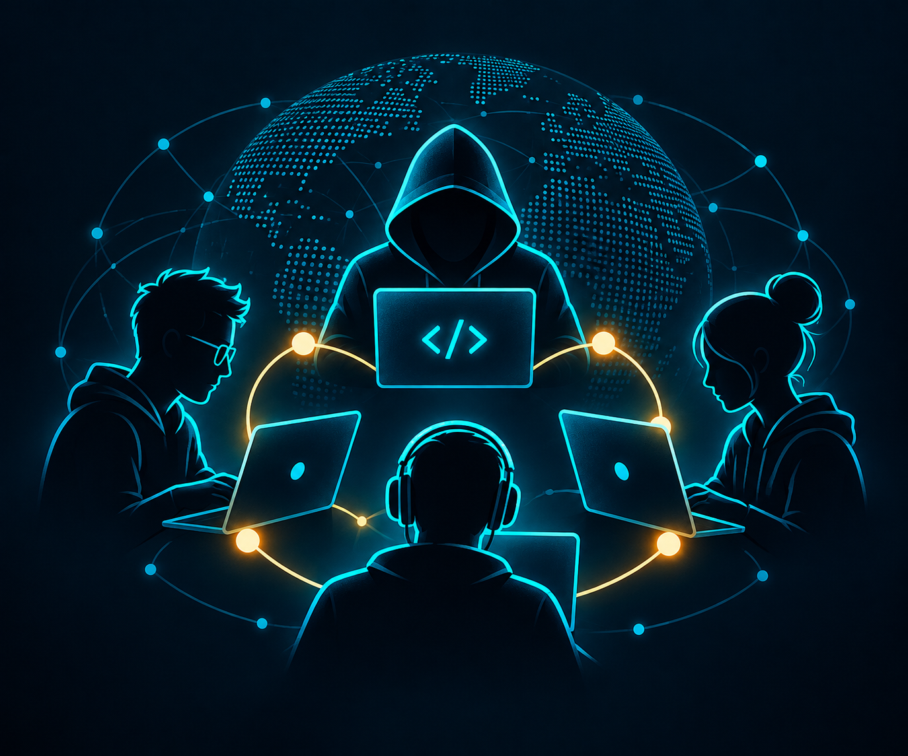
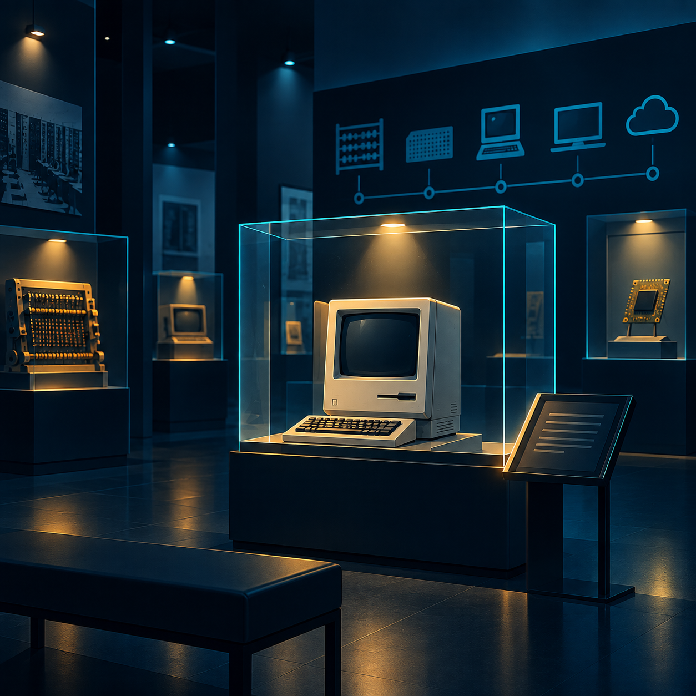

Hackers: Heroes of the Computer Revolution
Steven LevyKlassikkoteos varhaisesta hakkerikulttuurista, Hacker Ethic -ajattelusta ja tietokonevallankumouksen ensimmäisistä hakkerisukupolvista.
Tutustu kirjaanUteliaisuudesta ja kokeiluista maailmanlaajuiseksi ilmiöksi
Hakkeroinnin historia alkoi paljon ennen nykyisiä kyberhyökkäyksiä. Varhaisessa hakkerikulttuurissa keskeisiä olivat uteliaisuus, teknologian tutkiminen ja halu ymmärtää, miten järjestelmät toimivat.
Tietokoneiden, tietoverkkojen ja internetin kehittyessä myös hakkerointi muuttui. Samalla syntyivät uudenlaiset tietoturvauhat, lainsäädäntö, tietoturva-ammatit ja menetelmät, joilla digitaalisia järjestelmiä suojataan.
Tutustu aikajanaan
Hakkeroinnin historia ei ole vain kyberrikollisuuden historiaa. Se liittyy myös tietokoneharrastukseen, ohjelmointiin, internetin kehitykseen ja modernin kyberturvallisuuden syntyyn. Seuraavat vaiheet kuvaavat muutamia tämän kehityksen tärkeitä käännekohtia.
Varhainen hakkerikulttuuri
Yksi hakkerikulttuurin varhaisista keskuksista oli MIT:n Tech Model Railroad Club (TMRC). Sen jäsenet rakensivat ja muokkasivat monimutkaisia ohjausjärjestelmiä pienoisrautateille ja kokeilivat myöhemmin myös tietokoneita. Tässä ympäristössä hack liittyi kekseliääseen tekniseen ratkaisuun ja järjestelmien käyttämiseen uusilla tavoilla.
Tutustu TMRC:n historiaanTietokoneista tulee kokeilun välineitä
1960-luvulla hakkerikulttuuri siirtyi yhä enemmän tietokoneiden ympärille. MIT:n opiskelijoille tietokone ei ollut vain laskentaväline, vaan järjestelmä, jota voitiin tutkia, ohjelmoida ja käyttää luovasti. Varhaiset hakkerit kehittivät esimerkiksi ohjelmointityökaluja, pelejä ja musiikkiohjelmia sekä kokeilivat uusia tapoja käyttää tietokoneita.
Lue MIT:n varhaisesta hakkerikulttuuristaHenkilökohtaiset tietokoneet
1970-luvulla mikroprosessorit ja ensimmäiset harrastajille suunnatut tietokoneet laajensivat kokeilukulttuuria yliopistojen ulkopuolelle. Vuonna 1975 perustetusta Homebrew Computer Clubista tuli tärkeä kohtaamispaikka tietokoneharrastajille, suunnittelijoille ja hakkereille.
Tutustu Homebrew Computer Clubin historiaanVerkot, tietomurrot ja lainsäädäntö
Tietokoneiden ja verkkojen yleistyminen muutti myös hakkeroinnin mittakaavaa. Luvattomasta pääsystä tietojärjestelmiin tuli kasvava yhteiskunnallinen ja oikeudellinen kysymys. Yhdysvalloissa kehitys johti vuonna 1986 Computer Fraud and Abuse Act -lain (CFAA) säätämiseen.
Vuonna 1988 Morris-mato levisi silloisessa internetissä ja häiritsi tuhansien verkkoon liitettyjen tietokoneiden toimintaa. Tapaus osoitti konkreettisesti, kuinka nopeasti ohjelmisto saattoi levitä verkossa ja kuinka laajoja seurauksia sillä saattoi olla.
Lue Morris-madosta ja sen vaikutuksistaOrganisoitu tietoturvatoiminta kehittyy
Morris-madon jälkeen DARPA pyysi Carnegie Mellon Universityn Software Engineering Institutea perustamaan tietoturvahäiriöihin reagoivan ryhmän. Tästä syntyi CERT Coordination Center (CERT/CC), joka on myöhemmin osallistunut muun muassa haavoittuvuuksien koordinointiin ja incident response -toiminnan kehittämiseen.
Tutustu CERT/CC:n historiaanInternet muuttaa mittakaavan
Internetin nopea kasvu muutti myös hakkeroinnin mittakaavaa. Yhä useammat tietokoneet ja organisaatiot olivat yhteydessä verkkoon, ja tietoturvapoikkeamia havaittiin yhä enemmän. CERT/CC:n tutkimuksessa analysoitiin 4 299 vuosina 1989–1995 raportoitua Internetin tietoturvapoikkeamaa. Vuosikymmenen loppuun mennessä verkkohyökkäykset saattoivat koskettaa jo erittäin suuria määriä verkkoon liitettyjä järjestelmiä.
Lue Internetin tietoturvapoikkeamien tutkimuksestaKyberturvallisuudesta tulee ammatti
2000-luvulla kyberturvallisuus alkoi vakiintua yhä selvemmin omaksi ammattialakseen. Organisaatiot tarvitsivat asiantuntijoita suojaamaan kasvavaa digitaalista infrastruktuuria, ja erilaiset tietoturvaan liittyvät tehtävät, osaamisvaatimukset ja urapolut alkoivat määrittyä järjestelmällisemmin.
Kehitys näkyi myös pyrkimyksissä määritellä, millaista osaamista kyberturvallisuuden ammattilaiset tarvitsevat. Yhdysvalloissa esimerkiksi vuonna 2007 käynnistynyt työ johti myöhemmin NICE Cybersecurity Workforce Frameworkiin, jossa kyberturvallisuustyötä ja sen erilaisia työrooleja kuvataan yhteisen viitekehyksen avulla.
Tutustu NICE Frameworkin historiaanHakkerointi maailmanlaajuisena ilmiönä
Digitaalisten palvelujen, pilvipalvelujen, älypuhelinten ja sosiaalisen median käyttö kasvoi nopeasti. Samalla myös kyberuhkien toimintaympäristö laajeni. Kyberrikollisuus kehittyi yhä järjestäytyneemmäksi, ja myös hacktivismi, kybervakoilu sekä valtioihin liitetty kybertoiminta nousivat näkyvämmiksi osiksi kansainvälistä turvallisuusympäristöä.
Hakkerointi ja kyberturvallisuus eivät enää koskettaneet vain yksittäisiä tietokoneita tai organisaatioita, vaan digitaalista infrastruktuuria, yrityksiä, julkishallintoa ja tavallisia käyttäjiä maailmanlaajuisesti.
Tutustu vuoden 2017 kyberuhkien tilannekuvaanHakkerointi osana digitaalista yhteiskuntaa
Yhteiskunnan riippuvuus digitaalisista palveluista on tehnyt kyberturvallisuudesta osan jokapäiväistä elämää. Hakkerointiin liittyvää toimintaa esiintyy hyvin erilaisissa ympäristöissä: kyberrikollisuudessa, hacktivismissa, valtioihin liitetyssä toiminnassa, tietoturvatutkimuksessa sekä organisaatioiden omassa turvallisuustyössä. Samalla pilvipalvelut, toimitusketjut, tekoäly ja yhä tiiviimmin toisiinsa liittyvät järjestelmät muuttavat sekä hyökkääjien että puolustajien toimintaympäristöä. Kyberhyökkäysten seuraukset voivat ulottua yksittäisestä käyttäjästä yrityksiin, julkisiin palveluihin ja yhteiskunnan kriittiseen infrastruktuuriin.
Tutustu nykyiseen kyberuhkaympäristöönSanalla hacker ei ole aina tarkoitettu tietomurron tekijää. Varhaisessa tietokonekulttuurissa sillä kuvattiin erityisesti ihmistä, joka halusi ymmärtää järjestelmiä syvällisesti ja ratkaista teknisiä ongelmia kekseliäästi.
Internetin ja tietokonerikollisuuden yleistyessä sana alkoi julkisessa keskustelussa liittyä yhä vahvemmin luvattomiin tietomurtoihin. Vuoden 1993 Internet Users' Glossary teki vielä selvän eron: hacker kuvattiin järjestelmien sisäisestä toiminnasta kiinnostuneeksi henkilöksi, kun taas cracker tarkoitti henkilöä, joka yrittää päästä tietojärjestelmiin ilman lupaa.
Hakkeroinnin historia osoittaa, että hakkerointi ei ole yksi muuttumaton ilmiö. Sen merkitys on muuttunut teknologian, yhteiskunnan ja lainsäädännön mukana.
Historian tunteminen auttaa ymmärtämään, miksi nykyisessä kyberturvallisuudessa korostuvat esimerkiksi lupa, vastuullinen haavoittuvuuksien ilmoittaminen, järjestelmällinen tietoturvatestaus ja nopea reagointi tietoturvahäiriöihin.
Historia auttaa näkemään, mistä nykyiset käytännöt ovat syntyneet.
Aiemmat tapahtumat ovat muuttaneet tapaa, jolla järjestelmiä suojataan.
Teknologia muuttuu, mutta monet turvallisuuden peruskysymykset säilyvät.
Haluatko tutustua hakkeroinnin historiaan ja hakkerikulttuuriin tarkemmin? Näistä lähteistä löydät lisää tietoa aiheesta.

Klassikkoteos varhaisesta hakkerikulttuurista, Hacker Ethic -ajattelusta ja tietokonevallankumouksen ensimmäisistä hakkerisukupolvista.
Tutustu kirjaan
Akateeminen artikkeli hakkeroinnin historiallisesta kehityksestä ja sen eri vaiheista.
Tutustu artikkeliin
Tutkimus hakkerikulttuurin historiasta, identiteetistä ja suhteesta ympäröivään yhteiskuntaan.
Tutustu teokseenAkateeminen artikkeli hakkereista yhteisönä sekä hakkerikulttuurin piirteistä ja motiiveista.
Tutustu artikkeliin
Laaja kokoelma tietokoneiden, ohjelmistojen ja digitaalisen teknologian historiaa.
Tutustu kokoelmiin